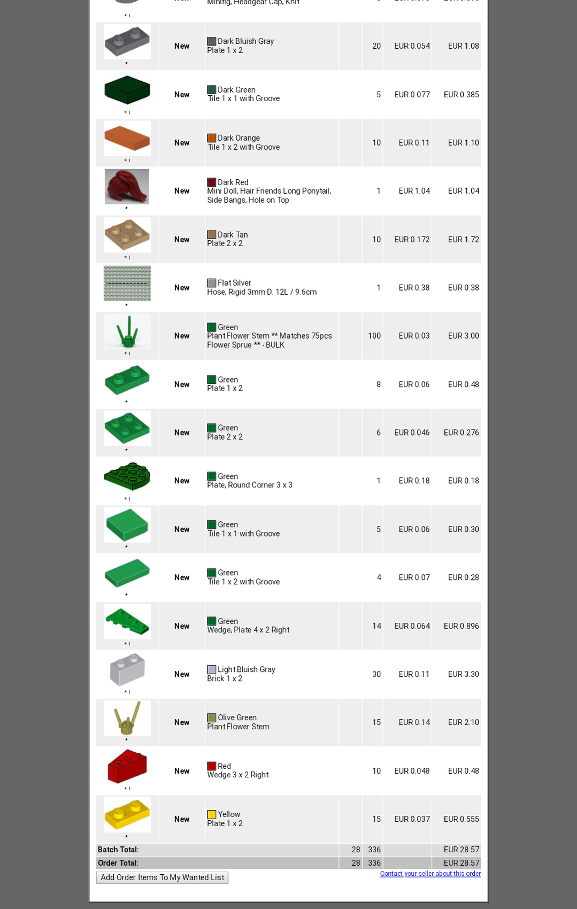

Effective Bricklinking
We’ve all probably used it once or, in some cases, way more than once: Bricklink. A very useful website if you need a lot of a certain type of part or a whole list of parts for a project.
2/10/18
We’ve all probably used it once or, in some cases, way more than once: Bricklink. A very useful website if you need a lot of a certain type of part or a whole list of parts for a project. So useful in fact that a lot of people, myself included, don’t really buy that many sets anymore. The only sets I have bought in the past 2 or 3 years have been battlepacks, which even with raised prices compared to when they first came out actually have quite a good value if you need all the included minifigures. But if you, like myself, do not collect sets and are really just interested in parts to build MOC’s, is buying sets even worth it? I compared one of my Bricklink orders (see images) to gain some insight in the difference in price per brick. The per brick price in the order is about 0.085 eurocents per brick, and it contains a licensed Star Wars minifig, as well as a mix of cheap and expensive lots.
The first set I looked at is Yoda’s Starfighter, a set that retails for about $25 in the US, but over here in Europe will set you back about €31. This is probably because in Europe taxes are higher than in the US. I was able to find it on sale for €25, but the site previously sold it for €35, and since BL also features items on sale depending on the store, I used the price most stores use. The set contains 262 pieces and two licensed character minifigs, Yoda and R2-D2. The price comes out to about 0.12 eurocents per piece.
 Another set I looked at was a Lego City set which retails for about €30, 60172 Dirt Road Pursuit. I pretty much chose it at random out of a list of City sets within the price range. I chose City because it is a genre Lego owns and doesn’t have to pay a licensing fee over to Warner Bros or Disney. This set contains 297 pieces, including three City minifigs, putting the PPB (price per brick) at roughly 0.10 eurocents. A better price compared to the Star Wars set, but still higher than the BL order.
Another set I looked at was a Lego City set which retails for about €30, 60172 Dirt Road Pursuit. I pretty much chose it at random out of a list of City sets within the price range. I chose City because it is a genre Lego owns and doesn’t have to pay a licensing fee over to Warner Bros or Disney. This set contains 297 pieces, including three City minifigs, putting the PPB (price per brick) at roughly 0.10 eurocents. A better price compared to the Star Wars set, but still higher than the BL order.
Of course this quick take is not very scientific, sample size is just too small, but it at least gives you an idea of the price range. Buying bricks from BL comes with several advantages and disadvantages compared to buying sets. As said before, if you need specific bricks you are better off finding a BL store that owns them than to buy sets to get them. And even if you just want to fill up your Lego containers with bricks you are probably still off cheaper buying them from Bricklink. However, buying a bunch of parts is a whole different buying experience compared to buying a set off the shelf or ordering one online. When you receive a BL order, you have to sort the parts out. When you open up a set, you get to put it together, which we all know is a lot of fun. So for those who enjoy constructing sets, be that with use of instructions or without, getting your BL order will not be a very satisfying way to spend your money. There are also the risks: you could get scammed or your package could be lost in the mail, although this seems to be pretty rare. And unless you live really close to your BL seller, you have to pay shipping and handling, while if you don’t have the bucks to spend on shipping you can bike to the store to buy a set.
So all in all, if you really take a lot of enjoyment out of building or playing with sets or collect them, sure, go for it. Otherwise, just save yourself some money and use Bricklink. How Pick A Brick walls, especially the Legoland ones, measure into this, is of course a whole other debate, and one for another time.